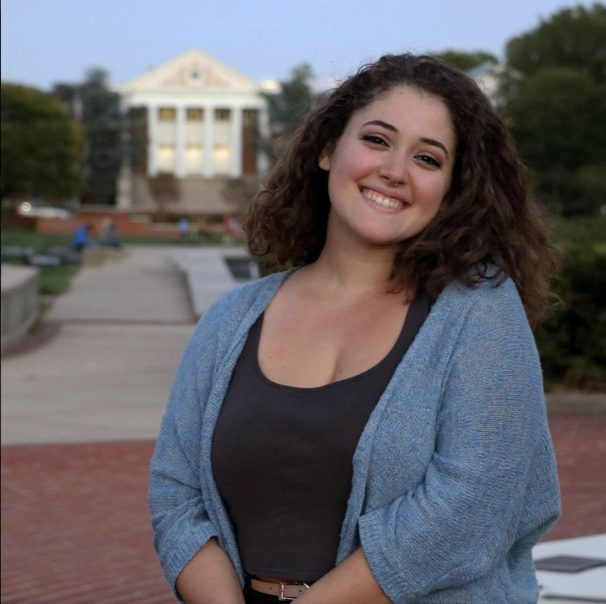

Mia Salenetri
Motion graphics and video editor

Contact:
I am a storyteller, a researcher, an editor and a politics junkie. I am constantly learning, and I want to use my skills as a digital visual journalist to break down complex political issues using motion graphics and data visualization.
Producer and Live Production Crew Director
Capital News Service
September 2016 – Present
- Manages and schedules production crew. Directs and technical directs live broadcasts.
- Teaches After Effects motion graphics workshops, builds graphics for newscasts.
- As a producer, wrote and stacked half hour newscast for Capital News Service's Maryland Newsline, a live broadcast airing 3 nights a week.
- Builds necessary graphics and cuts video for newscast.
- Assists and manages student reporters.
Reporting Intern
Laslo Congressional Bureau
July 2018 – August 2018
- Attended and summarized Congressional press conferences.
- Researched details and context of legislation.
- Tracked down and interviewed Senators and Representatives.
- Wrote radio stories for National Native News.
Field Producer
Capital News Service
January 2018 – May 2018
- Worked under Tom Bettag as a field producer on a heavily detailed and researched 10-minute broadcast story.
- Story on criminal justice system and plea bargains aired on PBS Newshour.
- Traveled to Chicago, Illinois to shoot story and do interviews in one weekend.
- Researched the criminal justice system and combed through legal documents.
- Wrote scripts and edited final video.
- Bachelor of Arts, Broadcast Journalism, University of Maryland, 2020
- Bachelor of Arts, Government & Politics, University of Maryland, 2019
- Adobe Creative Suite
- Premiere Pro
- After Effects
- Photoshop
- Audition
- Illustrator
Videography
Web marketing content development
Live production directing and technical directing
Production project management
Data analysis and visiualization